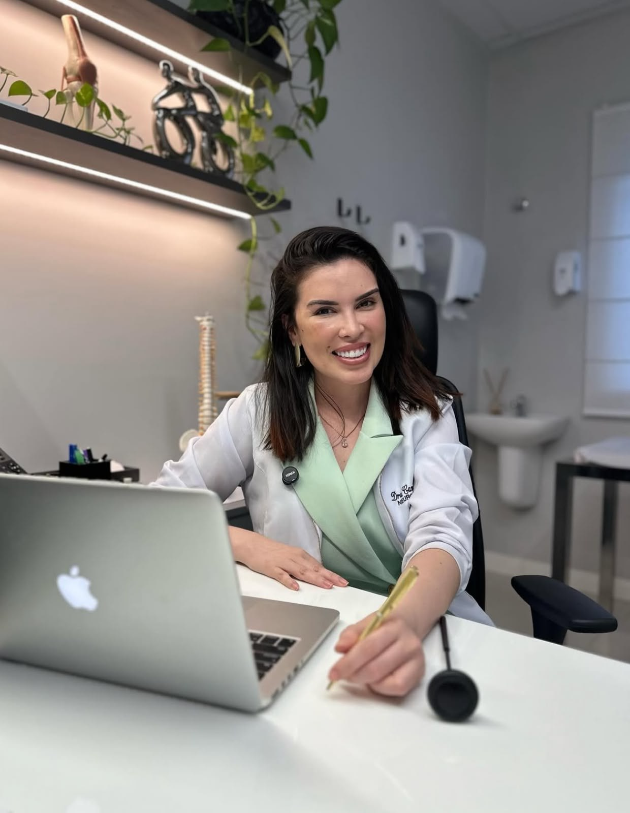
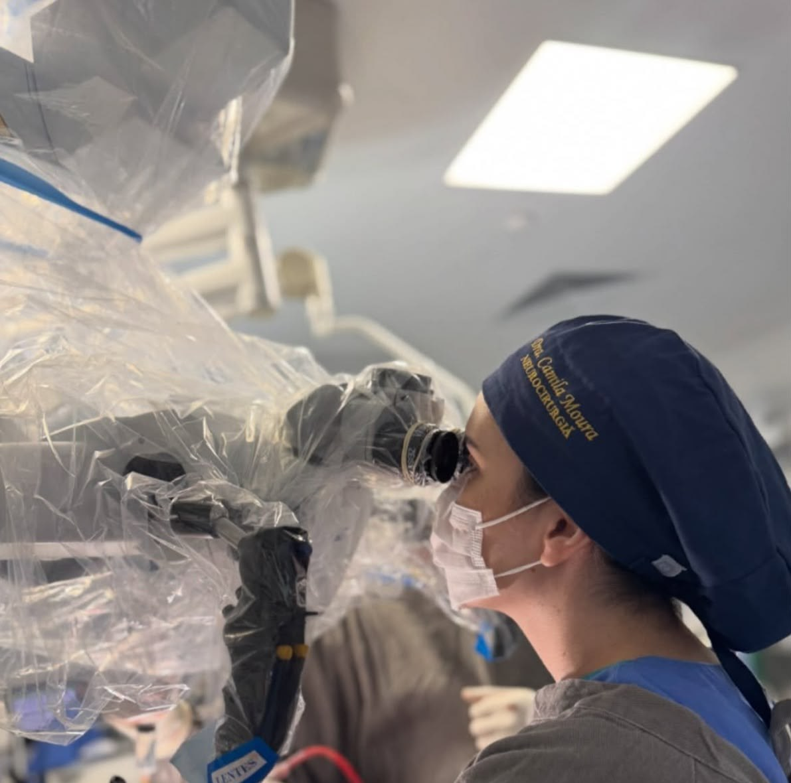
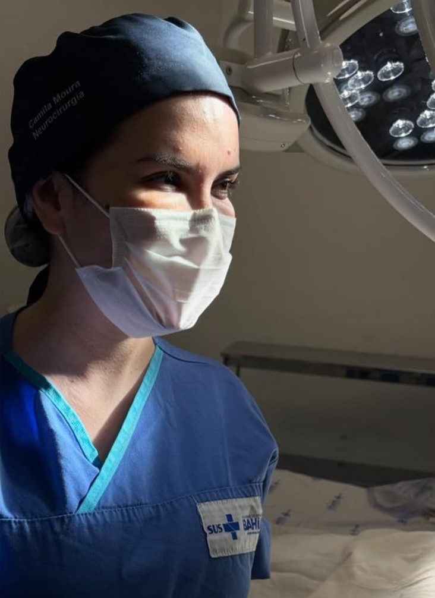

Cirurgia endoscópica da coluna
Técnica minimamente invasiva, com pequenas incisões, menor agressão aos tecidos e recuperação mais rápida no tratamento de hérnias de disco e estenoses.
Especialista em cirurgia endoscópica da coluna, neurocirurgiã de crânio e coluna e dedicada ao tratamento da dor crônica. Cuidado preciso, humano e minimamente invasivo em Feira de Santana.


Desde que escolhi a Medicina, entendi que minha missão seria mais do que tratar doenças: seria aliviar dores, devolver movimentos e restaurar vidas. Foi esse propósito que me conduziu à Neurocirurgia — uma área desafiadora, mas incrivelmente transformadora.
Sou especialista em Cirurgia Endoscópica da Coluna Vertebral pela USP de Ribeirão Preto, e pós-graduada em Neuro-oncologia e Neurointensivismo pelo Hospital Sírio-Libanês, em São Paulo. Atualmente, sigo aprofundando meus estudos na área de Dor, em uma pós-graduação pelo Cetrus/SP, buscando compreender ainda mais esse aspecto tão sensível e presente na vida de muitos pacientes.
Além da atuação clínica e cirúrgica, tenho um compromisso com a formação de novos profissionais. Tenho orgulho de ser preceptora da residência médica de Neurocirurgia no Hospital Geral Clériston Andrade (HGCA), onde compartilho conhecimento e incentivo o olhar humano na prática neurocirúrgica.
Atuo também no Hospital Estadual da Criança, na rede Unimed Baía de Todos os Santos e no Hospital São Matheus. Em Feira de Santana, atendo nos consultórios do Instituto IANN e da Clínica Alleviare, oferecendo atendimento personalizado, com foco na escuta, na confiança e no cuidado integral.
Acredito que conhecimento liberta, e saúde é uma forma de liberdade. Por isso, faço parte do Portal Viver Mais, onde compartilho informações de qualidade, incentivo o autocuidado e ajudo você a entender melhor seu corpo e suas possibilidades de tratamento.
Do diagnóstico ao tratamento cirúrgico, com indicação criteriosa e foco na recuperação e na qualidade de vida.
Técnica minimamente invasiva, com pequenas incisões, menor agressão aos tecidos e recuperação mais rápida no tratamento de hérnias de disco e estenoses.
Avaliação e tratamento cirúrgico de doenças que acometem o cérebro e o crânio, com planejamento individualizado e técnica microcirúrgica.
Tratamento de hérnia de disco, compressões nervosas e outras doenças da coluna cervical, torácica e lombar.
Abordagem dedicada para dores persistentes na coluna e nos nervos, buscando alívio, função e retorno às atividades do dia a dia.

“A neurocirurgia exige precisão nas mãos, mas também serenidade nas decisões.”Dra. Camila Moura
Idealizadora e preceptora da Prime Instrumentação, a Dra. Camila Moura compartilha a vivência do centro cirúrgico na formação de profissionais de instrumentação cirúrgica — com rigor técnico, segurança e trabalho em equipe.
Saiba mais sobre a PrimeAtendimento em neurocirurgia, coluna e dor crônica.
Atendimento em neurocirurgia de crânio e coluna.
Fale diretamente pelo WhatsApp e escolha o local mais conveniente para você.
Cérebros que Cuidam
A Dra. Camila Moura faz parte do @cerebrosquecuidam, projeto social que leva cuidado, informação e acolhimento em saúde a quem mais precisa.
Conheça o projeto